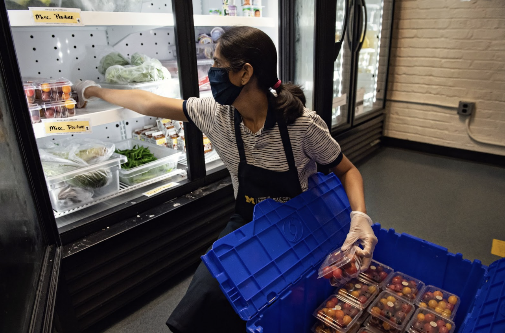
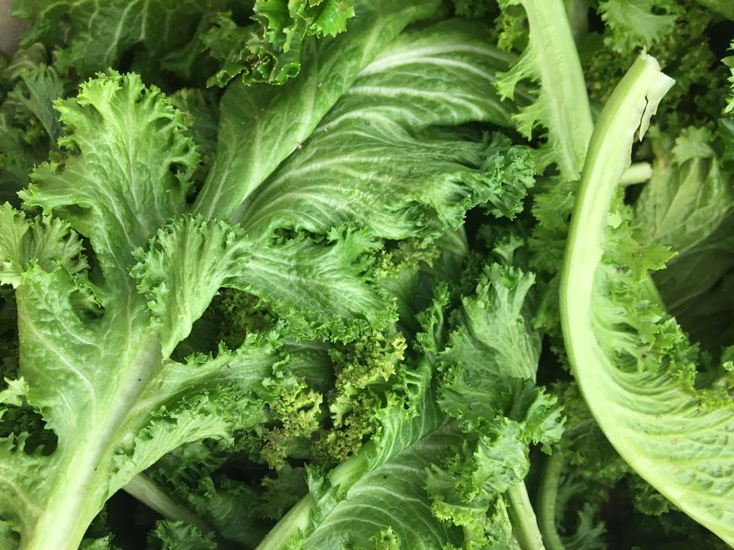
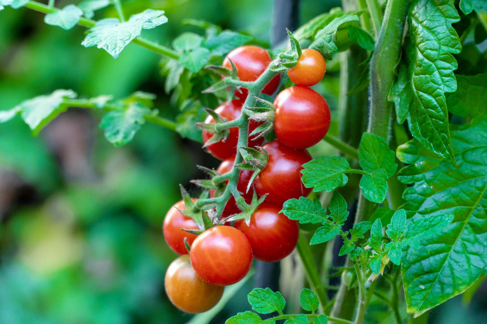
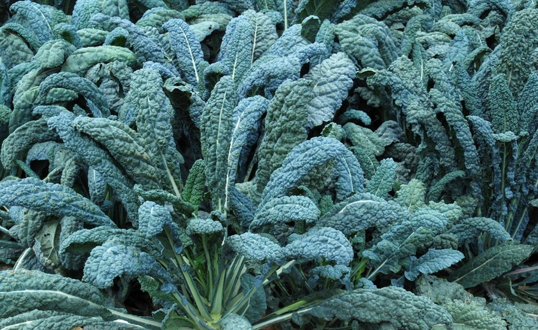
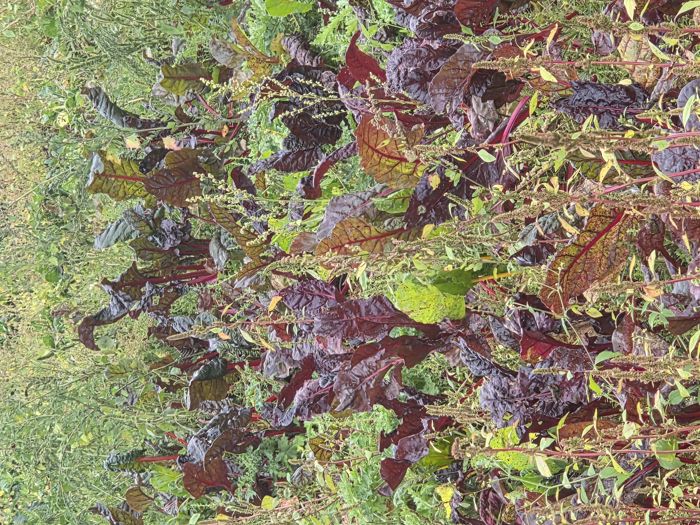
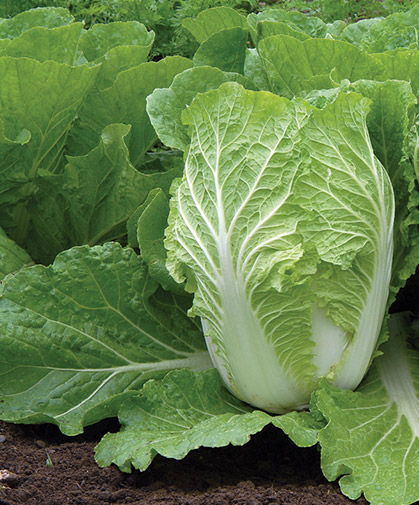
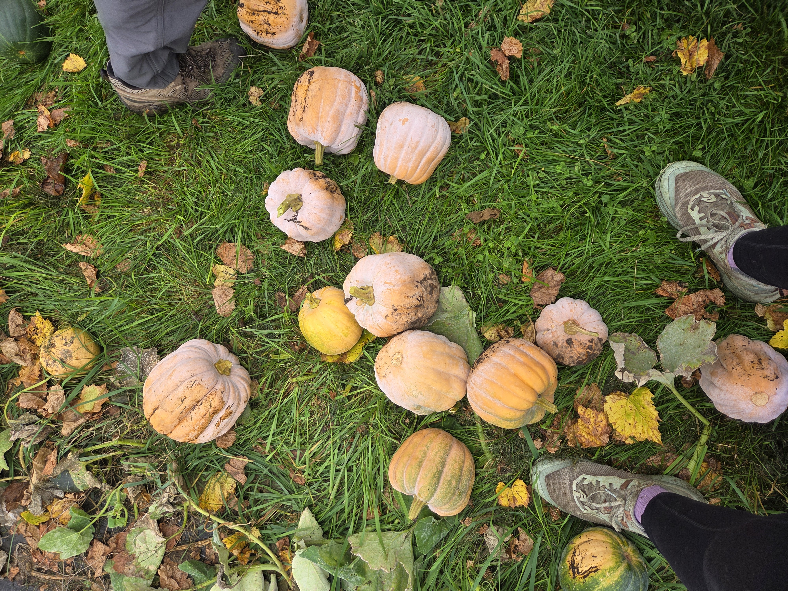
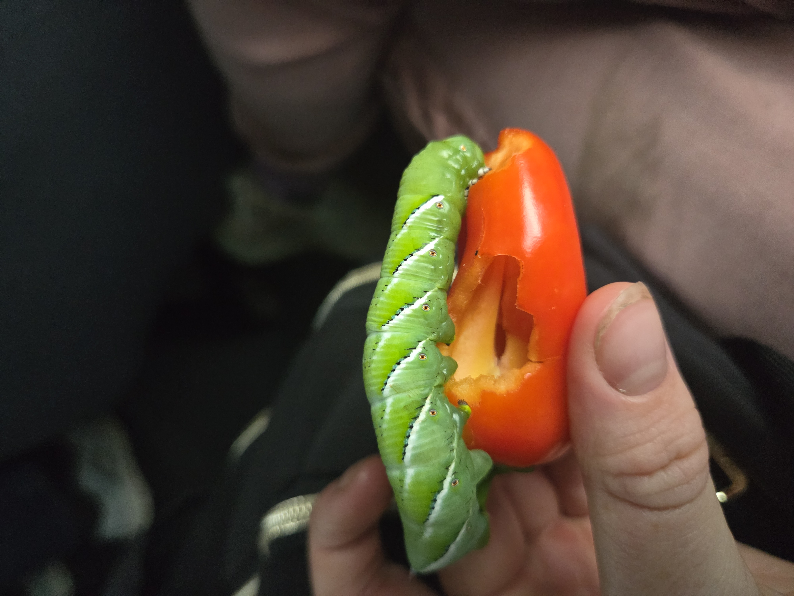

Daily Food-Safety Practices
Worker Hygiene
- Wash hands before handling produce.
- Do not handle produce when experiencing a foodborne illness.
- Keep produce contaminated by bodily fluids out of the food supply and follow the farm's approved disposal procedure.
Equipment and Washing Areas
- Keep harvest bins and food-contact equipment clean.
- Keep clean bins and produce washing stations covered by a roof.

Food-Safety Plans and Audits
Food-Safety Plan Components
- Hazard analysis
- Identify biological, chemical, physical, or radiological risks across ingredients and processing steps.
- Preventive controls
- Establish risk-based measures, like process controls, food-allergen controls, sanitation controls, and supply-chain oversight.
- Monitoring procedures
- Define steps for checking daily operations and confirming that preventive-control limits are met.
- Corrective actions
- Document what to do when a control fails or contamination occurs.
- Recall plan
- Establish procedures for retrieving affected products.
- Recordkeeping
- Maintain verifiable records of monitoring, corrective actions, and other food-safety activities.
What Does an Audit Check?
An audit evaluates whether the farm is following the practices and goals outlined in its food-safety plan. Areas reviewed include:
- Sanitation practices
- Pest control
- Equipment maintenance
- Staff food-safety training
- Documentation and records
General Harvest and Postharvest Handling
- Harvest timing
- Time harvesting to protect crop quality. For example, avoid harvesting leafy greens during the hottest part of the day.
- Temperature
- Refrigerate crops that require cold storage and follow crop-specific storage procedures.
- Moisture
- Monitor moisture conditions during irrigation, harvest, washing, and storage.
Major Campus Farm Wholesale Crop Groups
The following describes crop-specific harvesting, quality checks, and handling practices.
Lettuce/Salanova
Harvest
- Harvest in the morning.
- Cut at the base to harvest the head.
- Remove leaves with browning or pest damage.
Postharvest Handling

Tomatoes
Harvest and Ripeness
- Judge ripeness according to the variety's color and firmness.
- Red cherry tomatoes should be completely red.
- For the indigo cherry varietys, fruit starts green and purple and is picked when red and purple and soft.
- Do not harvest split tomatoes
Postharvest Handling
- Remove the calyx to help prevent damage to other tomatoes.
- Keep tomatoes in the harvest bin to reduce handling and splitting.
- Tomatoes are not usually placed in cold storage.
- Keep temperature between 32°F and 34°F
- Keep releative humidity between 95% and 100%

Kale/Collards
Harvest
- Harvest in the morning.
- Good in cold weather.
- Remove leaves individually.
- Exclude leaves with yellow spots or significant holes from pest damage.
Postharvest Handling

Chard
Harvest
- Harvest in the morning.
- Remove leaves individually.
- Exclude leaves with leaf spot or significant holes from pest damage.
Postharvest Handling

Napa Cabbage
Harvest
- Harvest when heads are firm.
- Harvest in the morning.
- Cut at the base to harvest the head.
- Remove outer leaves with browning or pest damage.
Postharvest Handling

Winter Squash
Harvest
Postharvest Handling

Peppers
Harvest and Ripeness
- Harvest when firm.
- For orange, yellow, or red varieties, harvest when the fruit reaches the intended color.
Postharvest Handling

Sources and Supporting Materials
- Lecture 2
- UMass Center for Agriculture, Food, and the Environment: Postharvest Handling and Sanitation
- Savvy Gardening: Harvesting Winter Squash
- NC Fresh Produce Safety: Leafy Greens
- Better Homes & Gardens: Cherry Tomato Image Source
- Johnny's Selected Seeds: Napa Cabbage Image Source
- The Market Gardener by Jean-Martin Fortier, Chapter 12, pages 127–132.